Figure 6.2. Reverse Index Scan
Ví dụ sau không đáp ứng prerequisite này vì nó trộn modifier ASC và DESC trong order by clause:
Query trước hết phải trả về các sale của yesterday theo thứ tự PRODUCT_ID giảm dần, sau đó là các sale của today, cũng theo PRODUCT_ID giảm dần. Figure 6.3 minh họa process này. Để lấy các sale theo đúng order yêu cầu, database sẽ phải “jump” trong lúc index scan.
Figure 6.3. Impossible Pipelined order by
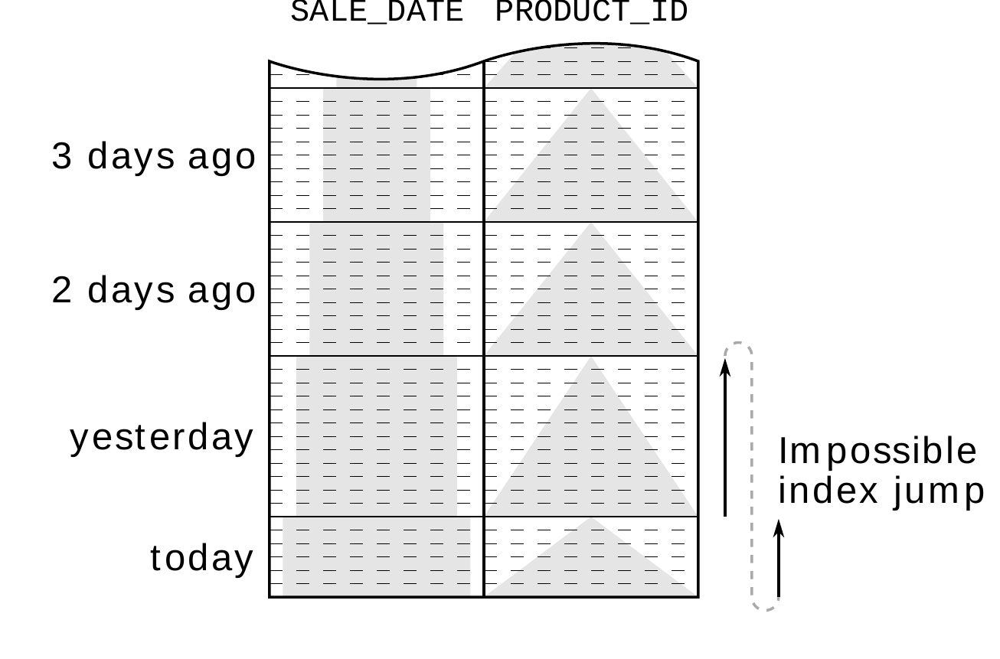
Tuy nhiên, index không có link từ sale của yesterday có PRODUCT_ID nhỏ nhất đến sale của today có PRODUCT_ID lớn nhất. Vì vậy database không thể dùng index này để tránh explicit sort operation.
Với những trường hợp như vậy, hầu hết database đều cung cấp một cách đơn giản để điều chỉnh index order theo order by clause. Cụ thể, bạn có thể dùng modifier ASC và DESC trong index declaration:
Bây giờ index order tương ứng với order by clause nên database có thể bỏ qua sort operation:
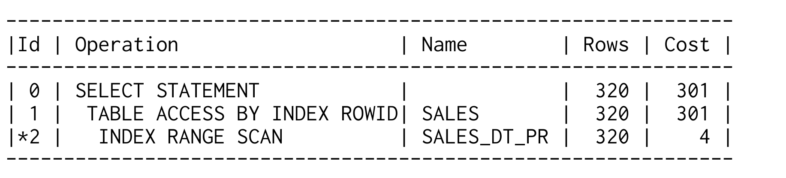
Figure 6.4 cho thấy index order mới. Việc thay đổi sort direction của column thứ hai thực chất đảo direction của các mũi tên trong figure trước. Nhờ vậy, mũi tên thứ nhất kết thúc tại nơi mũi tên thứ hai bắt đầu, khiến index có các row theo đúng order mong muốn.
Figure 6.4. Mixed-Order Index
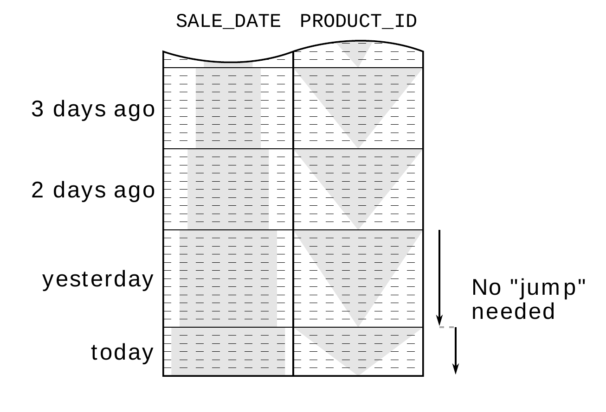
ASC/DESC indexing chỉ cần thiết khi sort từng column theo các direction đối nghịch nhau. Nó không cần thiết để đảo order của tất cả column vì database vẫn có thể đọc index theo descending order nếu cần — ngoại lệ duy nhất là secondary index trên index-organized table. Secondary index ngầm thêm clustering key vào index nhưng không cung cấp khả năng chỉ định sort order. Nếu cần sort clustering key theo descending order, bạn không còn lựa chọn nào khác ngoài việc sort tất cả column còn lại theo descending order. Khi đó database có thể đọc index theo reverse direction để lấy order mong muốn.
Ngoài ASC và DESC, SQL standard còn định nghĩa hai modifier ít được biết đến cho order by clause: NULLS FIRST và NULLS LAST. Khả năng kiểm soát rõ ràng việc sort NULL được đưa vào như một optional extension “gần đây” trong SQL:2003. Vì vậy, mức độ hỗ trợ giữa các database khá hạn chế. Điều này đặc biệt đáng lo vì standard không định nghĩa chính xác sort order của NULL. Standard chỉ quy định tất cả NULL phải nằm cạnh nhau sau khi sort, nhưng không nói chúng phải đứng trước hay sau các entry khác. Nói chính xác hơn, bạn cần chỉ định NULL sorting cho mọi column có thể nhận NULL trong order by clause để có behavior được định nghĩa rõ ràng.
Tuy nhiên, thực tế là optional extension này chưa được SQL Server 2012 hoặc MySQL 5.6 implement. Ngược lại, Oracle database đã hỗ trợ NULLS sorting từ trước khi nó được đưa vào standard, nhưng tính đến release 11g, Oracle không chấp nhận nó trong index definition. Vì vậy Oracle database không thể thực hiện pipelined order by khi sort với
NULLS FIRST. Chỉ PostgreSQL database (từ release 8.3) hỗ trợ modifier NULLS trong cả order by clause và index definition.
Overview sau đây tóm tắt các feature được những database khác nhau cung cấp.
Figure 6.5. Database/Feature Matrix
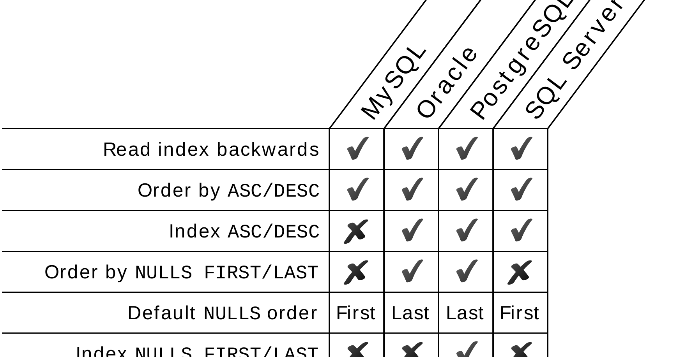
SQL database dùng hai group by algorithm hoàn toàn khác nhau. Algorithm thứ nhất là hash algorithm, aggregate các input record trong một temporary hash table. Sau khi xử lý toàn bộ input record, hash table được trả về làm result. Algorithm thứ hai là sort/group algorithm, trước hết sort input data theo grouping key để các row của mỗi group nằm liền kề nhau. Sau đó database chỉ cần aggregate chúng. Nói chung, cả hai algorithm đều cần materialize một intermediate state, nên chúng không được execute theo pipelined manner. Tuy vậy, sort/group algorithm có thể dùng index để tránh sort operation, nhờ đó enable pipelined group by.
Xét query sau. Query này trả về revenue của yesterday được group theo PRODUCT_ID:
Vì đã biết index trên SALE_DATE và PRODUCT_ID từ section trước, sort/group algorithm phù hợp hơn vì INDEX RANGE SCAN tự động trả về các row theo order cần thiết. Nghĩa là database tránh được materialization vì không cần explicit sort operation — group by được execute theo pipelined manner.
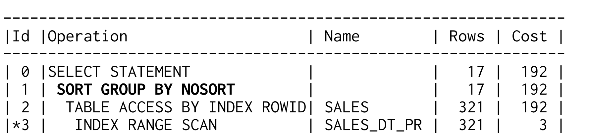
Execution plan của Oracle database đánh dấu một SORT GROUP BY được execute theo pipelined manner bằng addendum NOSORT. Execution plan của các database khác không nhắc đến sort operation nào.
Pipelined group by có cùng prerequisite với pipelined order by, ngoại trừ việc không có modifier ASC và DESC. Nghĩa là define index với modifier ASC/DESC không nên ảnh hưởng đến pipelined group by execution. Điều tương tự cũng đúng với NULLS FIRST/LAST. Tuy nhiên, có những database không thể sử dụng đúng một ASC/DESC index cho pipelined group by.
Nếu mở rộng query để xét tất cả sale kể từ yesterday, như trong ví dụ về pipelined order by, điều đó sẽ ngăn pipelined group by vì cùng lý do trước đó: INDEX RANGE SCAN không trả về các row theo order của grouping key (so sánh Figure 6.1 ở page 131).
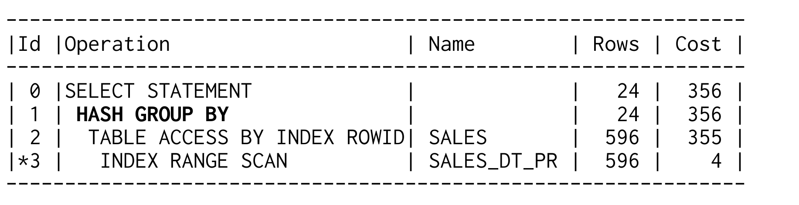
Thay vào đó, Oracle database dùng hash algorithm. Ưu điểm của hash algorithm là nó chỉ cần buffer aggregated result, trong khi sort/group algorithm materialize toàn bộ input set. Nói cách khác, hash algorithm cần ít memory hơn.
Cũng như pipelined order by, execution nhanh không phải là khía cạnh quan trọng nhất của pipelined group by execution. Quan trọng hơn là database execute nó theo pipelined manner và trả về result đầu tiên trước khi đọc toàn bộ input. Đây là prerequisite cho các advanced optimization method được giải thích trong chapter tiếp theo.
Đôi khi bạn không cần toàn bộ result của một SQL query mà chỉ cần vài row đầu tiên — chẳng hạn để chỉ hiển thị mười message mới nhất. Trong trường hợp này, người dùng cũng thường được phép browse các message cũ hơn — bằng paging navigation truyền thống hoặc biến thể hiện đại hơn là “infinite scrolling”. Tuy nhiên, các SQL query liên quan đến chức năng này có thể gây ra performance problem nghiêm trọng nếu phải sort toàn bộ message để tìm các message mới nhất. Vì vậy, pipelined order by là một phương pháp optimization rất mạnh cho các query như vậy.
Chapter này trình bày cách dùng pipelined order by để retrieve partial result một cách hiệu quả. Dù syntax của các query này khác nhau giữa các database, chúng vẫn execute query theo cách rất giống nhau. Một lần nữa, điều này cho thấy tất cả chúng đều put their pants on one leg at a time.
Top-N query là query giới hạn result ở một số row cụ thể. Đây thường là query lấy các entry mới nhất hoặc “tốt nhất” trong một result set. Để execute hiệu quả, việc ranking phải được thực hiện bằng pipelined order by.
Cách đơn giản nhất để chỉ fetch các row đầu tiên của query là fetch các row cần thiết rồi đóng statement. Đáng tiếc là optimizer không thể dự đoán điều đó khi prepare execution plan. Để chọn execution plan tốt nhất, optimizer phải biết application cuối cùng sẽ fetch toàn bộ row hay không. Trong trường hợp đó, full table scan với explicit sort operation có thể perform tốt nhất, dù pipelined order by có thể tốt hơn khi chỉ fetch mười row — ngay cả khi database phải fetch từng row một. Nghĩa là optimizer phải biết bạn sẽ abort statement trước khi fetch toàn bộ row để có thể chọn execution plan tốt nhất.
SQL standard đã không yêu cầu điều này trong một thời gian dài. Extension tương ứng (fetch first) chỉ mới được giới thiệu trong SQL:2008 và hiện chỉ có trong IBM DB2, PostgreSQL và SQL Server 2012. Một mặt, đó là vì feature này là non-core extension; mặt khác, mỗi database đã cung cấp giải pháp proprietary riêng trong nhiều năm.
Các ví dụ sau cho thấy cách dùng những extension quen thuộc này bằng cách query mười sale mới nhất. Cơ sở luôn giống nhau: fetch toàn bộ sale, bắt đầu từ sale mới nhất. Top-N syntax tương ứng chỉ abort execution sau khi fetch mười row.
MySQL và PostgreSQL dùng limit clause để giới hạn số row được fetch.
Oracle database cung cấp pseudo column ROWNUM, tự động đánh số các row trong result set. Để dùng column này trong một filter, chúng ta phải wrap query:
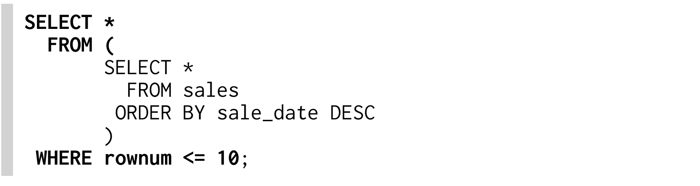
PostgreSQL hỗ trợ fetch first extension từ version 8.4. Limit clause được dùng trước đây vẫn hoạt động như trong ví dụ MySQL.
SQL Server cung cấp top clause để giới hạn số row được fetch.
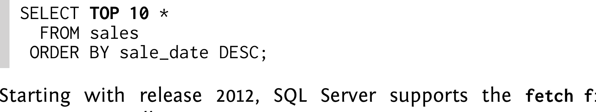
Bắt đầu từ release 2012, SQL Server cũng hỗ trợ fetch first extension.
Tất cả SQL query nêu trên đều đặc biệt vì database nhận diện chúng là top-N query.
Nếu optimizer biết rằng chúng ta chỉ cần mười row, nó sẽ ưu tiên dùng pipelined order by nếu phù hợp:
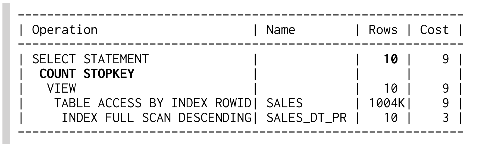
Execution plan của Oracle cho biết termination đã được plan bằng operation COUNT STOPKEY. Điều đó nghĩa là database đã nhận diện top-N syntax.
Dùng đúng syntax mới chỉ là một nửa câu chuyện vì để termination hiệu quả, các operation bên dưới cũng phải được execute theo pipelined manner. Nghĩa là order by clause phải được cover bởi một index — trong ví dụ này là index SALE_DT_PR trên SALE_DATE và PRODUCT_ID. Khi dùng index này, database có thể tránh explicit sort operation và ngay lập tức gửi các row cho application khi đọc chúng từ index. Execution bị abort sau khi fetch mười row nên database không đọc nhiều row hơn số row được select.
Nếu không có index phù hợp trên SALE_DATE cho pipelined order by, database phải đọc và sort toàn bộ table. Row đầu tiên chỉ được trả về sau khi đọc row cuối cùng từ table.
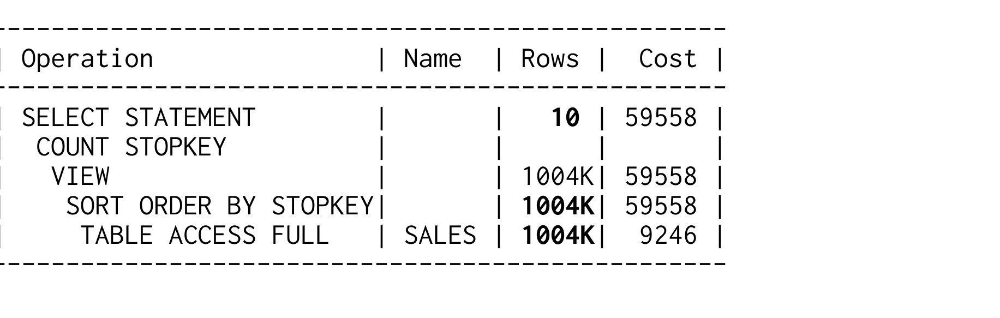
Execution plan này không có pipelined order by và gần như chậm tương đương với việc abort execution từ phía client. Dùng top-N syntax vẫn tốt hơn vì database không cần materialize toàn bộ result mà chỉ cần mười row mới nhất. Cách này cần ít memory hơn đáng kể. Execution plan của Oracle cho biết optimization này bằng modifier STOPKEY trên operation SORT ORDER BY.
Các advantage của pipelined top-N query không chỉ là performance gain ngay lập tức mà còn là scalability tốt hơn. Nếu không dùng pipelined execution, response time của top-N query này tăng theo table size. Ngược lại, response time khi dùng pipelined execution chỉ tăng
theo số row được select. Nói cách khác, response time của pipelined top-N query luôn như nhau; nó gần như độc lập với table size. Chỉ khi B-tree depth tăng thì query mới chậm hơn một chút.
Figure 7.1 cho thấy scalability của cả hai variant khi data volume tăng. Response time tăng tuyến tính đối với execution không có pipelined order by được thể hiện rất rõ. Response time của pipelined execution vẫn giữ nguyên.
Figure 7.1. Scalability của Top-N Query

Dù response time của pipelined top-N query không phụ thuộc vào table size, nó vẫn tăng theo số row được select. Vì vậy response time sẽ tăng gấp đôi khi select số row nhiều gấp đôi. Điều này đặc biệt đáng chú ý với các query “paging” load thêm result vì các query này thường bắt đầu lại từ entry đầu tiên; chúng sẽ đọc các row đã hiển thị ở page trước rồi loại bỏ chúng trước khi cuối cùng tới được result của page thứ hai. Tuy nhiên, vấn đề này cũng có lời giải như chúng ta sẽ thấy trong section tiếp theo.
Sau khi implement pipelined top-N query để retrieve page đầu tiên một cách hiệu quả, bạn thường cũng cần một query khác để fetch các page tiếp theo. Challenge phát sinh là query đó phải skip các row từ những page trước. Có hai method khác nhau để xử lý challenge này: thứ nhất là offset method, đánh số row từ đầu và dùng filter trên row number để loại bỏ các row trước page được yêu cầu. Method thứ hai, tôi gọi là seek method, tìm entry cuối cùng của page trước và chỉ fetch các row tiếp theo.
Các ví dụ sau trình bày offset method được dùng phổ biến hơn. Advantage chính của nó là rất dễ xử lý — đặc biệt với các database có keyword riêng cho nó (offset). Keyword này thậm chí đã được đưa vào SQL standard như một phần của fetch first extension.
MySQL và PostgreSQL cung cấp offset clause để loại bỏ số row được chỉ định từ đầu của một top-N query. Limit clause được áp dụng sau đó.
Oracle database cung cấp pseudo column ROWNUM, tự động đánh số row trong result set. Tuy nhiên, không thể áp dụng filter lớn hơn hoặc bằng (>=) trên pseudo-column này. Để làm được điều đó, trước hết bạn phải “materialize” row number bằng cách đổi tên column với một alias.
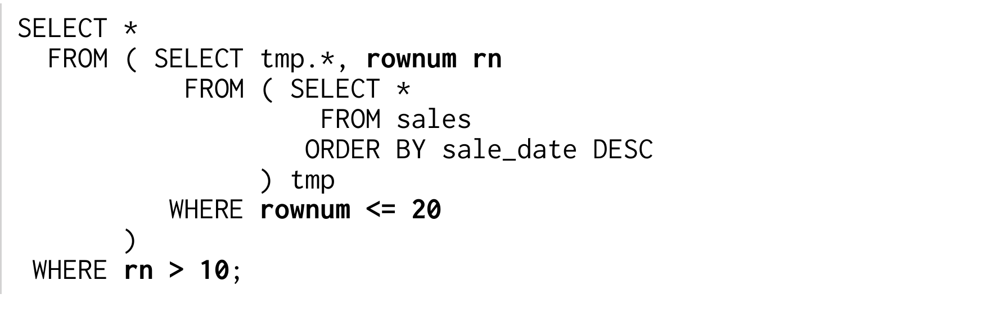
Lưu ý việc dùng alias RN cho lower bound và pseudo column ROWNUM cho upper bound.
Fetch first extension cũng định nghĩa một offset ... rows clause. Tuy nhiên, PostgreSQL chỉ chấp nhận offset không có keyword rows. Syntax limit/offset được dùng trước đây vẫn hoạt động như trong ví dụ MySQL.
SQL Server không có extension “offset” cho proprietary top clause của nó nhưng đã giới thiệu fetch first extension cùng SQL Server 2012 (“Denali”). Offset clause là bắt buộc dù standard định nghĩa nó là một optional addendum.
Ngoài sự đơn giản, một advantage khác của method này là bạn chỉ cần row offset để fetch một page bất kỳ. Tuy nhiên, database phải count tất cả row từ đầu cho đến khi tới page được yêu cầu. Figure 7.2 cho thấy scanned index range lớn hơn khi fetch nhiều page hơn.
Figure 7.2. Access Using the Offset Method

Điều này có hai disadvantage: (1) các page bị drift khi insert sale mới vì việc đánh số luôn được thực hiện lại từ đầu; (2) response time tăng khi browse lùi về xa hơn.
Seek method tránh được cả hai vấn đề vì nó dùng các value của page trước làm delimiter. Nghĩa là nó tìm các value phải nằm sau entry cuối cùng của page trước. Điều này có thể biểu diễn bằng một where clause đơn giản. Nói theo cách khác: seek method đơn giản là không select những value đã được hiển thị.
Ví dụ tiếp theo trình bày seek method. Để minh họa, chúng ta giả sử mỗi ngày chỉ có một sale. Khi đó SALE_DATE là một unique key. Để select những sale phải nằm sau một date cụ thể, bạn phải dùng điều kiện less than (<) vì sort order là descending. Với ascending order, bạn phải dùng điều kiện greater than (>). Fetch first clause chỉ được dùng để giới hạn result ở mười row.
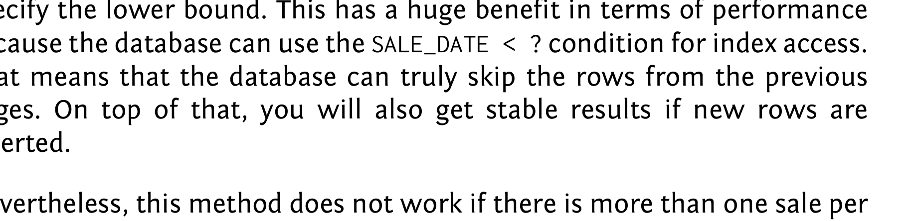
Thay vì row number, bạn dùng value cuối cùng của page trước để chỉ định lower bound. Điều này mang lại benefit rất lớn về performance vì database có thể dùng condition SALE_DATE < ? để access index. Nghĩa là database thực sự có thể skip các row từ những page trước. Ngoài ra, bạn cũng nhận được result ổn định nếu có row mới được insert.
Tuy nhiên, method này không hoạt động nếu mỗi ngày có nhiều hơn một sale — như trong Figure 7.2 — vì dùng date cuối cùng của page đầu tiên (“yesterday”) sẽ skip tất cả result của yesterday, không chỉ những result đã hiển thị trên page đầu. Vấn đề là order by clause không thiết lập một row sequence deterministic. Thế nhưng đó lại là prerequisite để dùng một range condition đơn giản cho page break.
Nếu không có deterministic order by clause, theo định nghĩa database không trả về một row sequence deterministic. Lý do duy nhất khiến bạn thường nhận được một row sequence nhất quán là database thường execute query theo cùng một cách. Tuy nhiên, database thực tế có thể shuffle các row có cùng SALE_DATE mà vẫn đáp ứng order by clause. Ở các release gần đây, bạn thực sự có thể nhận result theo order khác nhau mỗi lần chạy query, không phải vì database cố ý shuffle result mà vì database có thể sử dụng parallel query execution. Nghĩa là cùng một execution plan vẫn có thể tạo ra row sequence khác nhau vì các thread thực thi kết thúc theo một order không deterministic.
Ngay cả khi functional specification chỉ yêu cầu sort “theo date, mới nhất trước”, developer vẫn phải bảo đảm order by clause tạo ra một row sequence deterministic. Vì mục đích này, có thể chúng ta cần mở rộng order by clause bằng các column bất kỳ chỉ để bảo đảm row sequence deterministic. Nếu index được dùng cho pipelined order by có thêm column, trước tiên nên thêm chúng vào order by clause để tiếp tục dùng index này cho pipelined order by. Nếu như vậy vẫn chưa tạo ra deterministic sort order, chỉ cần thêm một hoặc nhiều unique column và mở rộng index tương ứng.
Trong ví dụ sau, chúng ta mở rộng order by clause và index bằng primary key SALE_ID để có một row sequence deterministic. Hơn nữa, chúng ta phải áp dụng logic “comes after” cho cả hai column cùng nhau để có result mong muốn:
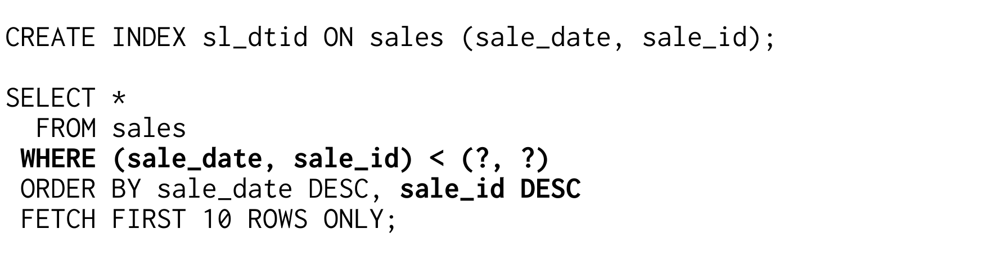
Where clause dùng syntax “row values” ít được biết đến (xem box có tiêu đề “SQL Row Values”). Syntax này kết hợp nhiều value thành một logical unit có thể áp dụng các comparison operator thông thường. Cũng như scalar value, điều kiện less-than tương ứng với “comes after” khi sort theo descending order. Nghĩa là query chỉ xét những sale nằm sau cặp SALE_DATE, SALE_ID được cung cấp.
Dù row values syntax là một phần của SQL standard, chỉ có một vài database hỗ trợ nó. SQL Server 2012 (“Denali”) hoàn toàn không hỗ trợ row values. Oracle database về nguyên tắc có hỗ trợ row values, nhưng không thể áp dụng range operator trên chúng (ORA-01796). MySQL evaluate row value expression chính xác nhưng không thể dùng chúng làm access predicate trong index access. Tuy nhiên, PostgreSQL hỗ trợ row value syntax và dùng chúng để access index nếu có index tương ứng.
Tuy nhiên, vẫn có thể dùng một biến thể xấp xỉ của seek method với những database không hỗ trợ row values đúng cách — dù cách xấp xỉ này không elegant và hiệu quả bằng row values trong PostgreSQL. Với cách xấp xỉ này, chúng ta phải dùng các comparison “thông thường” để biểu diễn logic cần thiết như trong Oracle example sau:
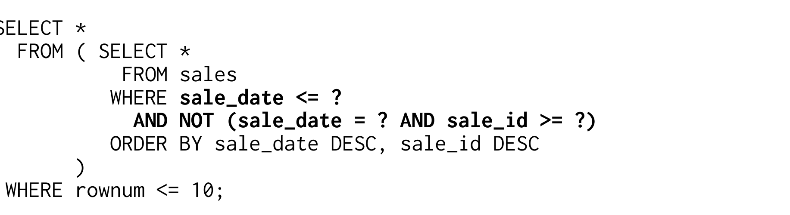
Where clause gồm hai phần. Phần thứ nhất chỉ xét SALE_DATE và dùng điều kiện less than or equal to (<=) — nó select nhiều row hơn mức cần thiết. Phần này đủ đơn giản để mọi database có thể dùng nó nhằm access index. Phần thứ hai loại bỏ các row dư đã được hiển thị trên page trước. Box có tiêu đề “Indexing Equivalent Logic” giải thích vì sao where clause được viết theo cách này.
Execution plan cho thấy database dùng phần thứ nhất của where clause làm access predicate.
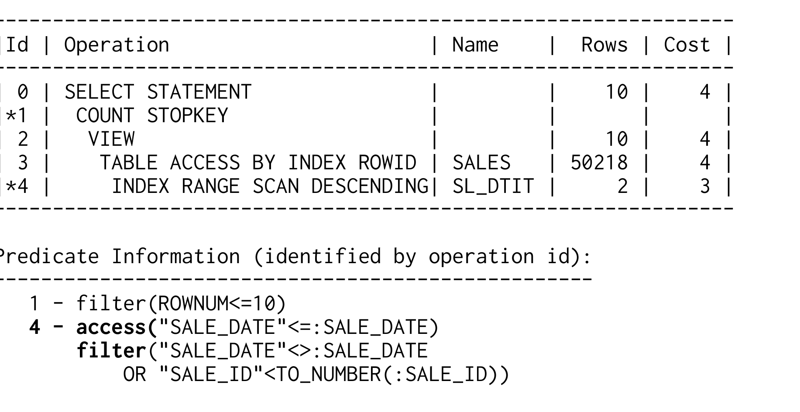
Access predicate trên SALE_DATE cho phép database skip những ngày đã được hiển thị đầy đủ ở các page trước. Phần thứ hai của where clause chỉ là filter predicate. Nghĩa là database inspect
một vài entry từ page trước lần nữa, nhưng loại bỏ chúng ngay lập tức. Figure 7.3 cho thấy access path tương ứng.
Figure 7.3. Access Using the Seek Method
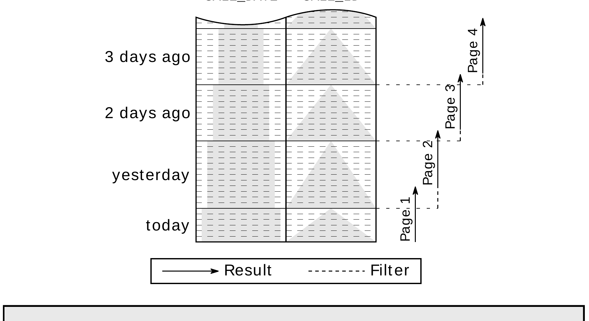
Figure 7.4 so sánh các đặc điểm performance của offset method và seek method. Độ chính xác của phép đo không đủ để nhìn thấy khác biệt ở phía bên trái của chart, nhưng khác biệt hiện rõ từ khoảng page 20 trở đi.
Figure 7.4. Scalability khi Fetch Page Tiếp Theo
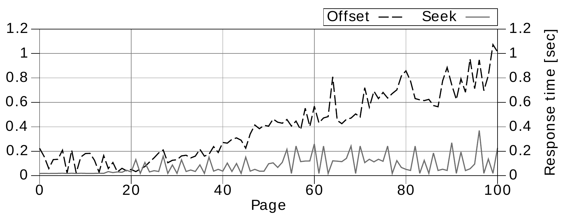
Tất nhiên seek method cũng có drawback, trong đó khó xử lý là drawback quan trọng nhất. Bạn không chỉ phải viết where clause rất cẩn thận — bạn còn không thể fetch các page bất kỳ. Hơn nữa, để đổi direction browse, bạn phải đảo ngược tất cả comparison và sort operation. Chính hai chức năng này — skip page và browse ngược — không cần thiết khi dùng cơ chế infinite scrolling cho user interface.
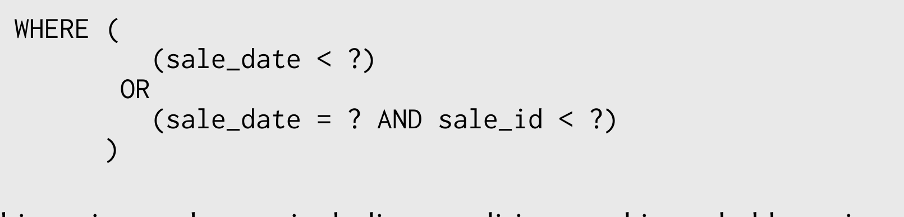
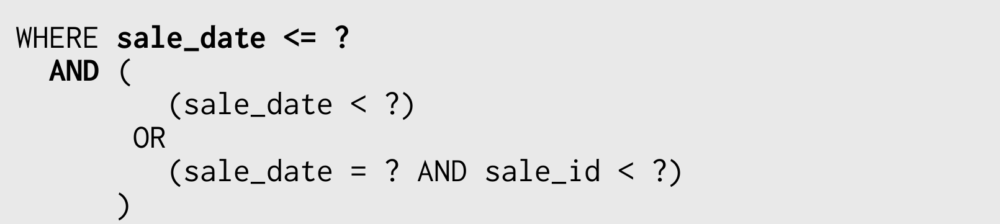